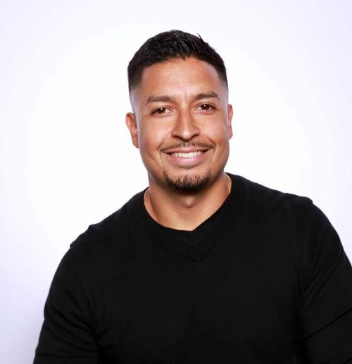
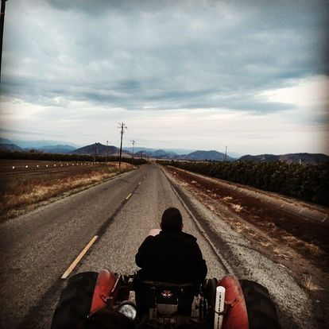
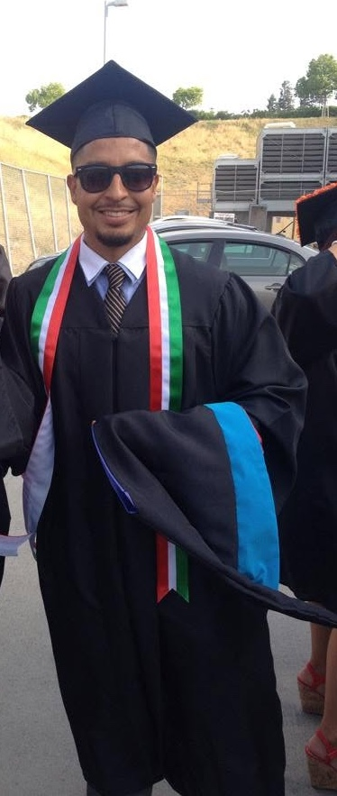
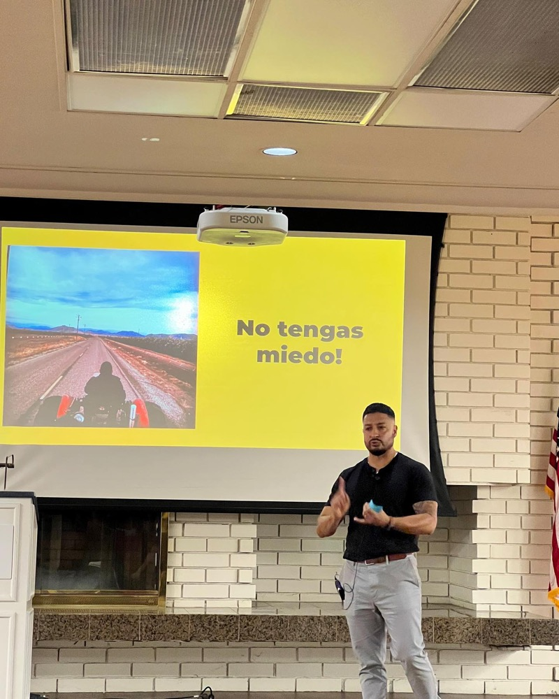
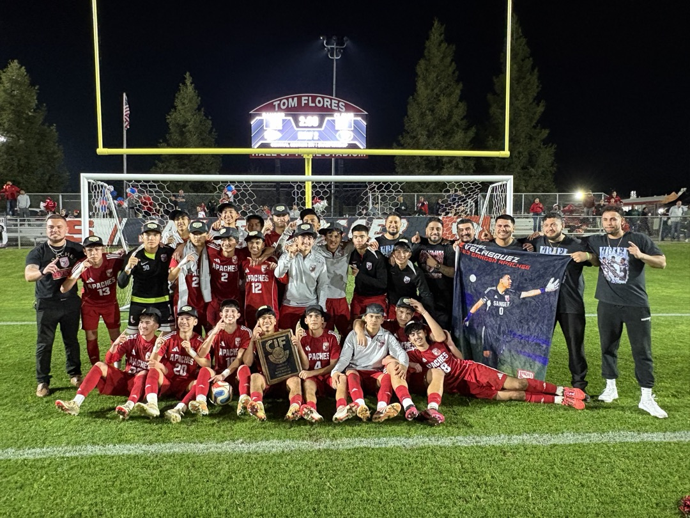

Home
Where it starts
Born and raised in the Central Valley.
I'm the son of immigrant parents, and I grew up working in the fields alongside farmworkers. That early life shaped how I see the world, and who I want to work for.

policy advocate · engineer · founder
I'm the son of immigrant parents, and I grew up working in the fields alongside farmworkers. That early life shaped how I see the world, and who I want to work for.

Central CaliforniaMy college path started in the social sciences, studying society and the systems of government. It led to a Master of Public Administration in 2013, where I gained a deeper understanding of public policy, organizational management and civic systems.

Master's graduation dayI worked in the community impact sector alongside nonprofits pushing for local and state policy changes that improve living conditions in marginalized communities, including youth leadership programs built on research, community organizing and policy.
In 2015 I joined Bitwise Industries in Fresno and found a new way to do the same work. I built software with government agencies, healthcare providers, nonprofits and growing companies, translating what people and communities actually needed into something that worked.
I came to technology through policy, and that has never stopped shaping how I build.
Same mission.
New tools.
As a senior engineer I mentored more than 30 apprentices, and over 20 of them went on to become junior engineers. I wanted people from communities like mine to see a career in tech as something within reach.

When Bitwise acquired Listing Alert, my role changed. I wasn't only building anymore. I was accountable for the entire product: where it was headed, who we needed on the team to get there, and whether the thousands of people relying on it every day were better off for it.
It's where I learned to hold the full picture, the technology, the people, and the promise to the customer.
Accountable for
where it goes.
Off the clock, I coach high school soccer. I built the Sanger Apaches boys program into a multi-time section champion and a California state champion, with a culture built on discipline, belonging and showing kids what they're capable of.

CIF champions, Sanger ApachesIn 2023 I started Oranj to do this work on my own terms. I partner with organizations in agriculture, construction, nonprofits, government and startups, helping turn their ideas into products and staying alongside them as they grow.
The work travels mostly by referral, because the relationships matter as much as the code.
See some of the work →I build systems, teams and opportunities that open doors for the communities that raised me. I lead with heart, with intention, and with the belief that the work only matters if people are better off for it.
I speak both community and code, and I translate between the people who need something and the people who build it.
Mentoring, coaching and leading teams is where I do my best work.
I take responsibility for the whole picture, not only my part of it.
Intention, honesty and a drive to bring out the best in the people around me.
I'm open to a range of opportunities. If something here resonates, I'd love to hear what you have in mind.